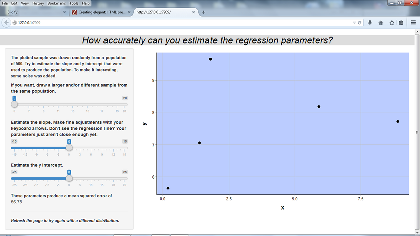
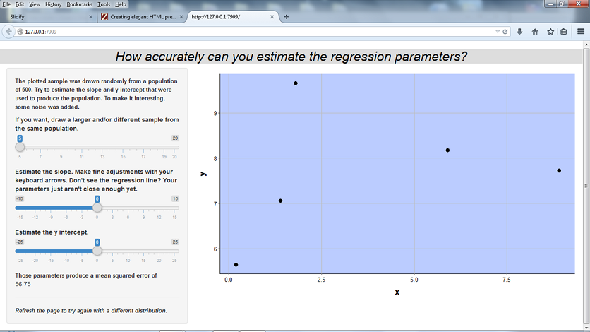

A. Student
Developing Data Products

Let's assume that the user selects a slope of 1 and a y intercept of 0. That has no effect at all on the first 6 levels of Pascal's triangle, which are:
array = rep(NA, 21)
count=1
for(i in 0:5) {
for(j in 0:i) {
array[count] = choose(i, j)
count = count + 1
}
}
print(array)
## [1] 1 1 1 1 2 1 1 3 3 1 1 4 6 4 1 1 5 10 10 5 1